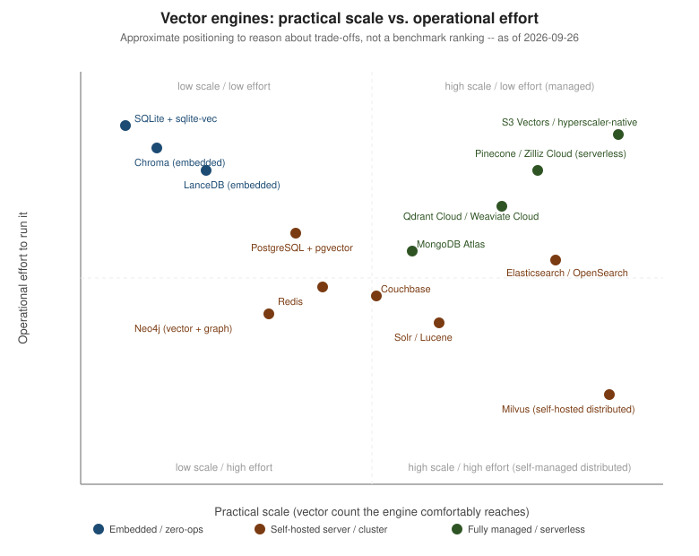
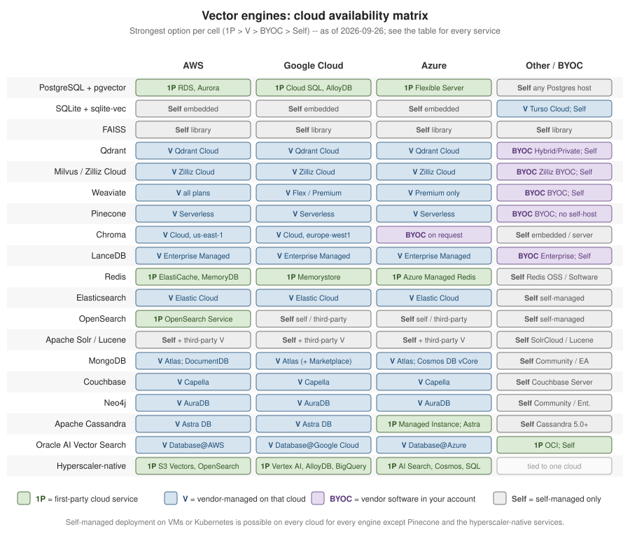

Comparing Vector Databases
|
This content was generated with the assistance of AI and should be verified against the official documentation of each tool and framework before being relied on in production. This section’s bibliography lists the reference material consulted while preparing these pages. |
This page compares every vector-capable engine this site mentions — the vector libraries, SQL extensions, purpose-built vector databases, search engines and multi-model stores covered on The Vector Database Landscape — on performance, scalability, price and cloud availability. It is the in-depth, opinionated counterpart to the short list in Choosing the Right Database. Facts about GA dates, cloud availability, free tiers, licences and pricing models are stated as of 2026-09-26 and linked to an official source; re-check the linked page before relying on any of them, since managed-service offerings change faster than this page can track. Code examples target the same baseline as the rest of this section: Python 3.12, FAISS 1.15.1, pgvector 0.8.6, Ollama 0.34, LangChain 1.4, LangChain4j 1.20.1, and Spring Boot 4.1 with Spring AI 2.0.1.
Evaluation criteria
Every engine below is judged on the same five criteria, defined once here:
- Performance
-
Latency and QPS at a stated recall (not in isolation — a faster engine at 50% recall is not "faster" than a slower one at 95%), where the index lives (RAM, disk or object storage), filtered-search behaviour, hybrid-search quality, ingest and index-build speed, and update/delete cost.
- Scalability
-
Vertical-only vs. sharded/distributed, practical vector counts per node and per cluster, dimension limits, write throughput, multi-tenancy, and whether storage and compute scale independently.
- Price
-
The licence (and what it allows), the self-hosting infrastructure cost, the managed-service pricing model, the free tier, and the main cost drivers — a RAM-resident index, replicas, quantization, search nodes billed separately, or read units.
- Cloud availability
-
For AWS, Google Cloud and Azure, whether there is a first-party service run by the cloud provider itself (1P), a vendor-managed service running on that cloud including marketplace listings (V), a bring-your-own-cloud deployment into the customer’s own account (BYOC), or only self-managed deployment (Self).
- Operations and ecosystem
-
Moving parts to run, backup/restore, security, maturity, and LangChain / Spring AI / LangChain4j support.
Scale vs. operational effort at a glance

The quadrant is a mental model, not a ranking: an embedded store (bottom-left) trades scale for zero operations, a self-hosted cluster (top-right) trades operational effort for control and cost, and a managed/serverless service (top-left toward the high-scale side) trades money for both scale and low effort. Where an engine sits also depends on how it is deployed — pgvector on a single managed Postgres instance is close to the low-effort side, while a hand-rolled Citus shard set for the same engine moves it toward the high-effort side.
Rules for performance claims
No number on this page is invented. Performance is described by mechanism — "HNSW held entirely in RAM", "a disk-resident Vamana/DiskANN graph", "object-storage-backed with a local cache" — because the mechanism, not a one-off number, is what predicts behaviour on a reader’s own data and hardware. Any quantitative benchmark mentioned elsewhere is attributed to its source and, when it comes from the vendor being benchmarked (Qdrant’s own published benchmarks, VectorDBBench from Zilliz), labelled as vendor-authored. ANN-Benchmarks is cited only for library-level (algorithm, not full-database) comparisons. The one way to get numbers that mean something for a specific workload is to run them, so this section is a runnable harness rather than a results table.
Benchmark harness
The harness below runs pgvector and Qdrant side by side against the same DocsAssistant-style synthetic 768-dim
vectors, using FAISS’s exact IndexFlatIP as ground truth for recall. It measures recall@10, p50/p99 latency,
single-client QPS, filtered recall (a component metadata filter, scored against a separate exact ground truth
computed over only the rows that pass the filter), ingest-plus-index-build time and on-disk size, and prints a
results table — it deliberately reports no numbers here, because the only honest numbers are the ones produced
on the reader’s own data and hardware.
# compose.yaml
services:
postgres:
image: pgvector/pgvector:pg17
environment:
POSTGRES_DB: docsassistant
POSTGRES_USER: docs
POSTGRES_PASSWORD: docs
ports:
- "5432:5432"
qdrant:
image: qdrant/qdrant:latest
ports:
- "6333:6333"
- "6334:6334"# benchmark_vector_engines.py
# pip install numpy psycopg[binary] pgvector qdrant-client faiss-cpu
import subprocess
import time
import faiss
import numpy as np
import psycopg
from pgvector.psycopg import register_vector
from qdrant_client import QdrantClient
from qdrant_client.models import (
CollectionStatus,
Distance,
FieldCondition,
Filter,
HnswConfigDiff,
MatchValue,
PointStruct,
VectorParams,
)
DIM = 768
N_VECTORS = 50_000
N_QUERIES = 200
TOP_K = 10
COMPONENTS = ["vector-rag", "spring-ai"]
FILTER_COMPONENT = COMPONENTS[0]
COLLECTION = "docsassistant_chunks"
rng = np.random.default_rng(seed=42)
def synthetic_corpus(n: int) -> tuple[np.ndarray, list[str]]:
vectors = rng.normal(size=(n, DIM)).astype("float32")
vectors /= np.linalg.norm(vectors, axis=1, keepdims=True)
components = [COMPONENTS[i % len(COMPONENTS)] for i in range(n)]
return vectors, components
def exact_neighbours(vectors: np.ndarray, queries: np.ndarray, ids: np.ndarray | None = None) -> np.ndarray:
"""Exact top-k by inner product (= cosine on unit vectors). `ids` maps row positions back to corpus ids."""
index = faiss.IndexFlatIP(DIM)
index.add(np.ascontiguousarray(vectors))
_, positions = index.search(queries, TOP_K)
return positions if ids is None else ids[positions]
def recall_at_k(retrieved: list[int], expected: np.ndarray) -> float:
return len(set(retrieved) & set(expected.tolist())) / len(expected)
def bench_pgvector(vectors, components, queries, truth, filtered_truth) -> None:
with psycopg.connect("host=localhost dbname=docsassistant user=docs password=docs") as conn:
conn.execute("CREATE EXTENSION IF NOT EXISTS vector")
register_vector(conn)
conn.execute("DROP TABLE IF EXISTS bench_chunks")
conn.execute(
"CREATE TABLE bench_chunks (id bigserial PRIMARY KEY, component text, embedding vector(768))"
)
ingest_start = time.perf_counter()
with conn.cursor().copy(
"COPY bench_chunks (component, embedding) FROM STDIN WITH (FORMAT binary)"
) as copy:
copy.set_types(["text", "vector"])
for component, vector in zip(components, vectors):
copy.write_row((component, vector))
conn.execute(
"CREATE INDEX bench_chunks_hnsw ON bench_chunks "
"USING hnsw (embedding vector_cosine_ops) WITH (m = 16, ef_construction = 64)"
)
conn.commit()
ingest_seconds = time.perf_counter() - ingest_start
# Index size on its own, and the whole table (heap + TOAST + every index) for comparison with Qdrant.
index_bytes = conn.execute("SELECT pg_relation_size('bench_chunks_hnsw')").fetchone()[0]
disk_bytes = conn.execute("SELECT pg_total_relation_size('bench_chunks')").fetchone()[0]
latencies, recalls = [], []
for query, expected in zip(queries, truth):
start = time.perf_counter()
rows = conn.execute(
"SELECT id FROM bench_chunks ORDER BY embedding <=> %s LIMIT %s", (query, TOP_K)
).fetchall()
latencies.append(time.perf_counter() - start)
recalls.append(recall_at_k([r[0] - 1 for r in rows], expected)) # bigserial ids start at 1
# Iterative index scans (pgvector 0.8+) keep scanning until LIMIT rows pass the WHERE clause.
conn.execute("SET hnsw.iterative_scan = relaxed_order")
filtered_recalls = []
for query, expected in zip(queries, filtered_truth):
rows = conn.execute(
"SELECT id FROM bench_chunks WHERE component = %s ORDER BY embedding <=> %s LIMIT %s",
(FILTER_COMPONENT, query, TOP_K),
).fetchall()
filtered_recalls.append(recall_at_k([r[0] - 1 for r in rows], expected))
report("pgvector (HNSW)", latencies, recalls, filtered_recalls, ingest_seconds, disk_bytes, index_bytes)
def wait_until_indexed(client: QdrantClient, timeout_seconds: float = 600.0) -> None:
# wait=True on upload only waits until the points are persisted; the HNSW graph is built afterwards by the
# background optimizer, so poll the collection info until it is GREEN and reports every point as indexed.
deadline = time.monotonic() + timeout_seconds
while time.monotonic() < deadline:
info = client.get_collection(COLLECTION)
if info.status == CollectionStatus.GREEN and (info.indexed_vectors_count or 0) >= (info.points_count or 0):
return
time.sleep(0.5)
print(f"warning: {COLLECTION} was not fully indexed after {timeout_seconds:.0f}s")
def qdrant_collection_disk_bytes() -> int:
# The collection info API reports point and indexed-vector counts but not bytes, so measure the collection's
# directory inside the container (the qdrant/qdrant image keeps its data under /qdrant/storage).
output = subprocess.run(
["docker", "compose", "exec", "-T", "qdrant", "du", "-sb", f"/qdrant/storage/collections/{COLLECTION}"],
check=True, capture_output=True, text=True,
).stdout
return int(output.split()[0])
def bench_qdrant(vectors, components, queries, truth, filtered_truth) -> None:
client = QdrantClient(url="http://localhost:6333")
if client.collection_exists(COLLECTION):
client.delete_collection(COLLECTION)
client.create_collection(
collection_name=COLLECTION,
vectors_config=VectorParams(size=DIM, distance=Distance.COSINE),
hnsw_config=HnswConfigDiff(m=16, ef_construct=64), # the same graph parameters as the pgvector index
)
ingest_start = time.perf_counter()
client.upload_points(
collection_name=COLLECTION,
points=(
PointStruct(id=i, vector=vector.tolist(), payload={"component": component})
for i, (vector, component) in enumerate(zip(vectors, components))
),
wait=True,
)
wait_until_indexed(client)
ingest_seconds = time.perf_counter() - ingest_start
disk_bytes = qdrant_collection_disk_bytes()
latencies, recalls = [], []
for query, expected in zip(queries, truth):
start = time.perf_counter()
hits = client.query_points(collection_name=COLLECTION, query=query.tolist(), limit=TOP_K).points
latencies.append(time.perf_counter() - start)
recalls.append(recall_at_k([h.id for h in hits], expected))
component_filter = Filter(must=[FieldCondition(key="component", match=MatchValue(value=FILTER_COMPONENT))])
filtered_recalls = []
for query, expected in zip(queries, filtered_truth):
hits = client.query_points(
collection_name=COLLECTION, query=query.tolist(), query_filter=component_filter, limit=TOP_K
).points
filtered_recalls.append(recall_at_k([h.id for h in hits], expected))
report("Qdrant (HNSW)", latencies, recalls, filtered_recalls, ingest_seconds, disk_bytes)
def report(name, latencies, recalls, filtered_recalls, ingest_seconds, disk_bytes, index_bytes=None) -> None:
p50 = np.percentile(latencies, 50) * 1000
p99 = np.percentile(latencies, 99) * 1000
qps = 1.0 / np.mean(latencies)
index_size = f"{index_bytes / 2**20:.1f}MiB" if index_bytes is not None else "n/a"
print(
f"{name:<16} recall@{TOP_K}={np.mean(recalls):.3f} filtered_recall@{TOP_K}={np.mean(filtered_recalls):.3f} "
f"p50={p50:.2f}ms p99={p99:.2f}ms qps={qps:.1f} ingest+index={ingest_seconds:.1f}s "
f"disk={disk_bytes / 2**20:.1f}MiB hnsw_index={index_size}"
)
if __name__ == "__main__":
corpus_vectors, corpus_components = synthetic_corpus(N_VECTORS)
query_vectors = rng.normal(size=(N_QUERIES, DIM)).astype("float32")
query_vectors /= np.linalg.norm(query_vectors, axis=1, keepdims=True)
truth_neighbours = exact_neighbours(corpus_vectors, query_vectors)
# Filtered ground truth: exact search over only the rows that pass the filter, mapped back to corpus ids.
filter_ids = np.flatnonzero(np.array(corpus_components) == FILTER_COMPONENT)
filtered_truth_neighbours = exact_neighbours(corpus_vectors[filter_ids], query_vectors, filter_ids)
bench_pgvector(corpus_vectors, corpus_components, query_vectors, truth_neighbours, filtered_truth_neighbours)
bench_qdrant(corpus_vectors, corpus_components, query_vectors, truth_neighbours, filtered_truth_neighbours)Run it with docker compose up -d followed by python benchmark_vector_engines.py from the same directory (the
Qdrant size measurement runs docker compose exec). Two details keep the comparison fair. Filtered recall is
scored against its own exact ground truth over the filtered subset, because the unfiltered top 10 mostly contains
rows the WHERE clause excludes. The Qdrant ingest time covers the upload with wait=True and the background
HNSW build, just as the pgvector time covers COPY plus CREATE INDEX. The two sizes are not identical measures:
pg_relation_size / pg_total_relation_size report the HNSW index and the whole table, while Qdrant’s figure is
the collection’s on-disk directory (vectors, payloads and the HNSW graph). The point of the harness is not the
numbers it happens to print on one laptop — it is a template to run against a reader’s own corpus size,
dimensionality, filter selectivity and hardware before choosing an engine on performance grounds. The client
calls follow Qdrant — Collections and
pgvector — iterative index scans.
Capacity and cost worked example
The HNSW memory formula gives the per-vector RAM cost of a graph-based index as approximately
For 10 million 768-dimension float32 vectors with M = 16, that is \(768 \cdot 4 + 16 \cdot 2 \cdot 4 =
3200\) bytes/vector, or about 32 GB total: about 30.7 GB of raw vectors plus about 1.28 GB of graph edges
( bytes/vector). Quantization only shrinks the raw-vector term; the HNSW edges
stay the same size:
-
int8(one byte per component instead of four) cuts the raw term fourfold, to 768 bytes/vector or about 7.7 GB, so the index needs about 9 GB once the 1.28 GB of edges are added back. -
Binary quantization (one bit per component, with a rescoring pass against the original vectors for the final ranking) cuts the raw term 32-fold, to 96 bytes/vector or about 0.96 GB, so the in-memory index is about 2.2 GB with the unchanged 1.28 GB of edges. The original
float32vectors (about 30.7 GB) still have to be kept somewhere, usually on disk, for the rescoring step.
That single number then costs differently depending on where the engine puts it:
-
RAM-resident engines (Redis’s default
HNSW, Elasticsearch/OpenSearch’s in-heap-adjacent HNSW, Weaviate’s default index) hold the full graph in memory on every replica, so the 32 GB above is paid per replica, and RAM is the most expensive byte a cloud provider sells. -
Disk-based engines (
pg_diskannon Azure Database for PostgreSQL, Couchbase’s Hyperscale Vector Index, Turso/libSQL’s DiskANN-based index) keep a Vamana/DiskANN-style graph on SSD and only cache the hot working set in RAM, trading some query latency for a cost curve that tracks disk, not RAM, prices. -
Object-storage-based engines (S3 Vectors, LanceDB’s Lance format, Pinecone serverless, Chroma Cloud, Milvus/Zilliz’s disaggregated storage) push the bulk of the data to S3-class storage priced per GB-month, at the cost of higher and less predictable per-query latency for data that is not already cached.
The practical takeaway: a RAM-resident engine is the right default for small-to-medium collections where latency matters most, but its cost scales roughly linearly with vector count and replica count; at hundreds of millions of vectors, a disk- or object-storage-based engine (or aggressive quantization on a RAM-resident one) usually costs less per vector even though its raw query latency is higher.
Per-engine strengths and weaknesses
Every engine mentioned anywhere on this site or in this section is listed below, with a link to its dedicated page where this site has one.
| Engine | Strengths | Weaknesses |
|---|---|---|
The database most teams already run — ACID, joins, backups and RBAC apply to vectors too. |
Vectors scale vertically on one primary; sharding needs Citus or application-level partitioning. The |
|
SQLite + sqlite-vec (and Turso/libSQL) |
Embedded, zero-ops, free, private/offline; runs on laptops, edge devices and mobile. Turso/libSQL adds native vector columns with a DiskANN-based index and a hosted service. |
Pre-1.0, brute-force-oriented KNN, single writer, no server and no first-party cloud service. Personal to small scale only. |
FAISS (library, for reference) |
The fastest raw building blocks: every major index family, GPU support, and the reference implementation for ANN research. Free (MIT licence). |
Not a database: no persistence model, metadata filtering, concurrency, replication, security or managed service of its own. |
Purpose-built (written in Rust). Payload-aware filterable |
One more system to operate and keep in sync with the system of record — no joins or transactions. No first-party hyperscaler service, only vendor-managed. Full-text search is basic compared with dedicated search engines. |
|
Milvus / Zilliz Cloud |
Built for billion-scale distributed search, with disaggregated storage and compute. The widest index choice
( |
Self-hosted distributed mode has many moving parts and is overkill at small scale (Milvus Lite / Standalone exist for that). Serverless compute-unit pricing needs modelling up front. |
Weaviate |
Built-in vectorizer and reranker modules (embedding at ingest), BM25 + vector hybrid with fusion, native multi-tenancy, gRPC/GraphQL APIs. BSD-3 licence. Weaviate Cloud (Free sandbox, Flex, Premium) and BYOC. |
Cloud coverage depends on the plan: AWS on every plan, Google Cloud on Flex/Premium, Azure only on Premium.
The default in-memory |
Pinecone |
Fully managed serverless with no operations, storage separated from compute, namespaces for multi-tenancy, integrated inference and reranking. Serverless on AWS, Google Cloud and Azure; BYOC on all three; a free Starter plan. |
Proprietary, with no self-hosted or local option — lock-in, and no offline development. Read-unit pricing
can grow quickly at high QPS. Plan minimums apply. The Starter plan is limited to AWS |
Chroma |
The simplest developer experience. Embedded/local mode, Apache 2.0. Chroma Cloud is serverless on object storage. |
Fewer production features at large scale. Multi-tenant cloud regions are limited (AWS |
LanceDB |
Embedded, built on the columnar Lance format on object storage: cheap storage, multimodal data, versioning. Apache 2.0. An Enterprise edition as Managed or BYOC on AWS, Google Cloud and Azure. |
Object-storage latency compared with RAM-resident engines. A younger ecosystem. |
In-memory, so the lowest latency and highest QPS — ideal for semantic caching, agent memory and real-time
updates. |
RAM cost: vectors and the index both live in memory, which is expensive at 100 M+ vectors. Feature parity differs between the Redis Query Engine, Valkey search and each cloud service (ElastiCache vector search is not on serverless caches; Azure needs RediSearch enabled at creation time with the Enterprise clustering policy). Licensing differs too: Redis 8 is AGPLv3 / RSALv2 / SSPLv1, while Valkey is BSD. See Deploying Redis on AWS, Deploying Redis on Google Cloud and Deploying Redis on Azure for the deployment detail. |
|
Best-in-class lexical + vector hybrid (BM25, RRF and reranker retrievers, ELSER sparse retrieval,
|
JVM heap plus off-heap |
|
OpenSearch |
Apache 2.0. First-party on AWS: Amazon OpenSearch Service and OpenSearch Serverless vector search collections (up to 16,000 dimensions); the default store behind Bedrock Knowledge Bases. Both the Faiss and Lucene engines are supported. |
No first-party service on Google Cloud or Azure — self-managed or third-party only there. Classic Serverless collections carry a minimum OCU charge that makes small workloads comparatively expensive (the pricing page lists newer NextGen collections that scale to zero when idle). |
Apache 2.0, mature. Dense vectors on Lucene |
No first-party managed service on any hyperscaler — only third parties such as SearchStax. Vector features trail Elasticsearch’s. Lucene is a library, not a server. |
|
Vectors live next to the operational documents. |
Search runs in a separate |
|
Key-value, SQL++, search and vector in one platform. Server 8.0 adds the Hyperscale Vector Index (disk-oriented, Vamana/DiskANN-inspired combined with an IVF hybrid, for very large collections) and the Composite Vector Index (a GSI index with scalar pre-filtering), alongside Search-service vectors. Mobile/edge sync. Capella on AWS, Google Cloud and Azure with a free tier. |
Three vector index options to choose between. A smaller AI-framework ecosystem than Postgres, MongoDB or Redis. No first-party hyperscaler service. |
|
Graph + vector for GraphRAG: vector entry points followed by graph expansion. Vector indexes have been GA
since 5.13 (Lucene |
Not designed for very large pure-vector workloads. Write scaling is limited compared with dedicated vector engines. Enterprise licence cost; Community edition is GPLv3. |
|
Apache Cassandra (and DataStax Astra DB) |
Cassandra 5.0 added a |
Vector support depends on the flavour: Amazon Keyspaces is Cassandra-compatible but supports neither
|
Oracle AI Vector Search |
A |
Licence cost and Oracle-ecosystem lock-in. Mentioned here for completeness; not documented in depth on this site. |
Hyperscaler-native services (S3 Vectors, Vertex AI Vector Search, Azure AI Search, and more below) |
Native IAM, networking, billing and RAG integration, with no extra vendor to onboard. AWS: S3 Vectors (GA
December 2025, up to 2 billion vectors per index, storage-priced, aimed at cheap and colder data), OpenSearch
Serverless, and the Bedrock Knowledge Bases store list. Google Cloud: Vertex AI Vector Search (ScaNN), AlloyDB
ScaNN, BigQuery |
Lock-in to one cloud: APIs, limits and features differ per service and are not portable. S3 Vectors trades latency for price. Azure AI Search’s semantic ranker is billed separately and is not on the Free tier. Vertex AI Vector Search bills serving node-hours even while idle. |
Cloud availability matrix
Legend, as of 2026-09-26: 1P = a first-party service run by the cloud provider itself, V = a vendor-managed service on that cloud (including a marketplace listing), BYOC = the vendor’s software deployed into the customer’s own cloud account, Self = self-managed only. The Other / BYOC column covers everything that is not tied to one of the three hyperscalers' consoles: BYOC offerings, other clouds (OCI), vendor-hosted services whose underlying cloud is not chosen per hyperscaler, and self-managed deployment — which, for every engine except Pinecone and the hyperscaler-native services, is also possible on VMs or Kubernetes in any of the three clouds.

The figure shows the strongest option per cell at a glance; the table names the concrete service behind each one.
| Engine | AWS | Google Cloud | Azure | Other / BYOC |
|---|---|---|---|---|
PostgreSQL + pgvector |
1P: RDS, Aurora |
1P: Cloud SQL, AlloyDB (ScaNN) |
1P: Database for PostgreSQL Flexible Server ( |
Self: any PostgreSQL host with the extension installed |
SQLite + sqlite-vec |
Self (embedded in the app) |
Self (embedded in the app) |
Self (embedded in the app) |
V: Turso Cloud (libSQL); Self: embedded anywhere |
FAISS |
Self (library in the app) |
Self (library in the app) |
Self (library in the app) |
Self: library, anywhere the app runs |
Qdrant |
V: Qdrant Cloud |
V: Qdrant Cloud |
V: Qdrant Cloud |
BYOC: Hybrid Cloud (the customer’s Kubernetes on any cloud, on-premises or edge); Private Cloud; Self |
Milvus / Zilliz Cloud |
V: Zilliz Cloud |
V: Zilliz Cloud |
V: Zilliz Cloud |
BYOC: Zilliz BYOC in the customer’s AWS, Google Cloud or Azure network; Self: Milvus |
Weaviate |
V: Weaviate Cloud (all plans) |
V: Weaviate Cloud (Flex/Premium) |
V: Weaviate Cloud (Premium only) |
BYOC: Weaviate BYOC; Self |
Pinecone |
V: Pinecone Serverless |
V: Pinecone Serverless |
V: Pinecone Serverless |
BYOC on AWS, Google Cloud and Azure; no self-hosted option |
Chroma |
V: Chroma Cloud ( |
V: Chroma Cloud ( |
No multi-tenant region; single-tenant / BYOC on request |
Self: embedded or single server |
LanceDB |
V: Enterprise Managed |
V: Enterprise Managed |
V: Enterprise Managed |
BYOC: Enterprise; Self: embedded open-source library |
Redis |
1P: ElastiCache for Valkey, MemoryDB; V: Redis Cloud |
1P: Memorystore for Valkey/Redis Cluster; V: Redis Cloud |
1P: Azure Managed Redis; V: Redis Cloud |
Self: Redis Open Source / Redis Software |
Elasticsearch |
V: Elastic Cloud Hosted/Serverless |
V: Elastic Cloud Hosted/Serverless |
V: Elastic Cloud Hosted/Serverless |
Self: self-managed Elasticsearch |
OpenSearch |
1P: Amazon OpenSearch Service, OpenSearch Serverless |
Self / third-party only |
Self / third-party only |
Self: self-managed OpenSearch |
Apache Solr / Lucene |
Self; third-party V (e.g. SearchStax) |
Self; third-party V (e.g. SearchStax) |
Self; third-party V (e.g. SearchStax) |
Self: SolrCloud; Lucene embedded in any JVM application |
MongoDB |
V: Atlas (incl. free M0); 1P-compatible: Amazon DocumentDB |
V: Atlas (incl. free M0; also sold through the Google Cloud Marketplace) |
V: Atlas; 1P-compatible: Cosmos DB for MongoDB vCore |
Self: Community / Enterprise Advanced with |
Couchbase |
V: Capella |
V: Capella |
V: Capella |
Self: Couchbase Server |
Neo4j |
V: AuraDB (incl. Free) |
V: AuraDB (incl. Free) |
V: AuraDB (incl. Free) |
Self: Community / Enterprise |
Apache Cassandra |
V: Astra DB (vector-enabled regions); Amazon Keyspaces has no vector search |
V: Astra DB (vector-enabled regions) |
1P: Azure Managed Instance for Apache Cassandra (5.0); V: Astra DB (vector-enabled regions) |
Self: Apache Cassandra 5.0+ |
Oracle AI Vector Search |
V: Oracle Database@AWS |
V: Oracle Database@Google Cloud |
V: Oracle Database@Azure |
1P on OCI, Oracle’s own cloud; Self: Oracle AI Database (including the Free edition) |
Hyperscaler-native (note row) |
1P: S3 Vectors, OpenSearch Serverless, Bedrock Knowledge Bases |
1P: Vertex AI Vector Search, AlloyDB ScaNN, BigQuery |
1P: Azure AI Search, Cosmos DB for NoSQL, Azure SQL |
Tied to their own cloud (SQL Server 2025 brings the |
Staying on one cloud with first-party services only
-
AWS — Aurora / RDS PostgreSQL + pgvector, Amazon OpenSearch Service / Serverless, MemoryDB / ElastiCache for Valkey, DocumentDB, S3 Vectors (plus Bedrock Knowledge Bases on top of any of these).
-
Google Cloud — AlloyDB (ScaNN) / Cloud SQL + pgvector, Vertex AI Vector Search, Memorystore for Valkey / Redis Cluster, BigQuery
VECTOR_SEARCH, Spanner ANN, Firestore. -
Azure — Azure Database for PostgreSQL Flexible Server (pgvector +
pg_diskann), Azure AI Search, Cosmos DB (for NoSQL and for MongoDB vCore), Azure Managed Redis, Azure SQLVECTOR.
Sticking to first-party-only services keeps IAM, networking, billing and support inside one vendor relationship, at the cost of every engine choice above being locked to whichever vector capability that cloud happens to offer — see Deploying Redis on AWS, Deploying Redis on Google Cloud and Deploying Redis on Azure for how the Redis-specific trade-offs play out on each cloud.
Pricing models and free tiers
No price is hard-coded below — pricing changes far faster than this page does. Every row instead states the licence, what drives the infrastructure cost of self-hosting it, the model a managed service’s price is computed from, and the free tier, with links to the official licence and pricing pages, checked as of 2026-09-26.
| Engine | Licence | Self-hosting cost driver | Managed pricing model | Free tier |
|---|---|---|---|---|
PostgreSQL + pgvector |
The Postgres server’s RAM (a hot HNSW index and memory-hungry index builds) and CPU, shared with the OLTP workload. |
The managed Postgres instance (compute + storage), with no separate vector charge. |
No vector-specific free tier; whatever the chosen managed Postgres offering provides. |
|
SQLite + sqlite-vec / Turso |
MIT or Apache 2.0 (sqlite-vec) |
None beyond the host application: it runs in-process, and brute-force KNN makes CPU per query grow with row count. |
Turso Cloud: plans with included databases, storage, rows read/written and syncs, then per-unit overage. |
Turso Free plan (no credit card); sqlite-vec itself is free. |
FAISS |
Host RAM (or GPU memory) for the index; persistence, filtering and replication are application code. |
No managed service. |
Free (library). |
|
Qdrant |
RAM for the HNSW graph and vectors unless on-disk storage or quantization is enabled; replicas. |
Resource-based: vCPU/RAM/disk per hour. |
1 GB RAM cluster, suspended when idle. |
|
Milvus / Zilliz Cloud |
Apache 2.0 (Milvus) |
The node count of a distributed deployment and its dependencies; RAM for in-memory indexes (DiskANN moves the graph to SSD). |
Serverless vCUs, or dedicated CU-hours plus storage. |
A free tier for small collections. |
Weaviate |
RAM for the default in-memory HNSW unless compression is enabled; replicas. |
Plan-based (Free sandbox / Flex / Premium), Flex billed by usage. |
Free sandbox. |
|
Pinecone |
Proprietary (managed only) |
Not self-hostable. |
Read/write units plus storage, with plan minimums. |
Starter plan. |
Chroma |
RAM and disk of the single server or embedded process. |
Usage-based against object storage. |
A starting usage credit. |
|
LanceDB |
Object storage (GB-month) plus the compute and local cache that query it. |
Enterprise (Managed or BYOC), priced on request. |
The open-source library is free; no listed free managed tier. |
|
Redis |
AGPLv3 / RSALv2 / SSPLv1 (Redis 8+) |
RAM: vectors and index live in memory on every replica. |
Memory size (plus throughput on the Pro tier) for Redis Cloud. |
Redis Cloud Essentials 30 MB. |
Elasticsearch |
JVM heap plus off-heap HNSW memory on each data node, replicas, and merge/indexing CPU. |
Serverless: ingest/search/ML VCU-hours plus storage; Hosted: deployment size. |
Trial period. |
|
OpenSearch |
Memory for the vector graphs on each data node, plus replicas. |
Amazon OpenSearch Service: instance-hours plus storage for domains; OCU-hours plus storage for Serverless (classic collections have a minimum OCU count). |
No service-specific free tier; new AWS accounts get time-limited AWS Free Tier credits. |
|
Apache Solr / Lucene |
JVM heap and OS page cache for Lucene HNSW segments on each node, replicas, and ZooKeeper for SolrCloud. |
Third-party only, e.g. SearchStax managed Solr; see the vendor for pricing. |
Free to self-host. |
|
MongoDB |
SSPL (Community); commercial Enterprise Advanced |
RAM and disk for the separate |
Atlas cluster tier per hour; Search Nodes for |
Atlas M0 free cluster. |
Couchbase |
Source under BSL 1.1; packaged Community and Enterprise editions under Couchbase licences |
Nodes running the Index or Search services; the disk-oriented Hyperscale Vector Index lowers the RAM needed. |
Compute + storage for the deployed Capella cluster. |
Capella free tier, pauses when idle. |
Neo4j |
Page-cache RAM for the graph plus the Lucene-backed vector index. |
Instance size per hour for AuraDB. |
AuraDB Free. |
|
Apache Cassandra / Astra DB |
Apache 2.0 (Cassandra); Astra DB is a proprietary managed service |
Node count, driven by data size times replication factor; SAI vector indexes are stored with each node’s data. |
Astra DB: consumption-based Standard plan (bought through IBM or AWS Marketplace), or an annual Enterprise contract. |
Astra DB Free plan: fixed monthly credits, after which databases hibernate until the next cycle. |
Oracle AI Vector Search |
Proprietary Oracle Database licence |
Oracle Database licensing plus hardware, including memory for the vector pool that holds in-memory HNSW indexes. |
OCI price list for Autonomous AI Database and the other OCI database services; Oracle Database@AWS/Azure/Google Cloud are billed through each cloud. |
Oracle AI Database Free (12 GB of user data, 2 GB of RAM, 2 cores). |
Azure AI Search |
Proprietary (cloud service) |
Not self-hostable. |
Search units by tier, with the semantic ranker billed separately. |
Free tier (no semantic ranker). |
Vertex AI Vector Search |
Proprietary (cloud service) |
Not self-hostable. |
Node-hours for serving, plus a per-GiB index build charge and streaming-update cost. |
Not in Google Cloud’s Always Free product list; new accounts' Free Trial credit applies to eligible products. |
S3 Vectors |
Proprietary (cloud service) |
Not self-hostable. |
Storage (logical GB-month), PUT (logical GB uploaded) and per-query charges, with no standing compute node. |
No S3 Vectors-specific free tier on the pricing page; new AWS accounts get time-limited AWS Free Tier credits for eligible services. |
Every pricing and licence page above is also listed under References for the plan-by-plan detail behind each row.
Choosing by scenario
| Scenario | Reach for |
|---|---|
Already on Postgres, up to tens of millions of vectors |
pgvector on your cloud’s managed Postgres |
Lowest possible latency, semantic cache or agent memory |
|
Keyword-heavy search or existing search infrastructure |
Elasticsearch / OpenSearch |
Operational data already lives in MongoDB |
|
Knowledge graph / GraphRAG |
|
Local, edge or prototype |
sqlite-vec / Chroma / LanceDB |
A dedicated self-hosted engine at 100 M+ vectors |
Qdrant / Milvus |
Zero-ops, pay-per-use |
Pinecone / a cloud-native serverless store |
Very cheap, cold (rarely queried) vectors |
S3 Vectors |
One cloud, first-party services only |
the Cloud availability matrix above |
Switching cost
A framework’s VectorStore (Spring AI, LangChain) or EmbeddingStore (LangChain4j) abstraction genuinely hides
the construction and wiring differences between stores — swapping the concrete implementation class or the
Maven/pip package, and re-pointing a connection string or API key, is usually a small, mechanical change. It does
not hide everything: index parameters (M, ef_construction, ef_search and their per-engine equivalents),
exactly which filter expressions are supported and how they compose with the vector search, whether hybrid
lexical+vector search and re-ranking are built in or bolted on, and the practical cost of re-embedding an entire
corpus if a migration also changes the embedding model. Budget time for those four, even when the code change
itself is one line. LangChain’s
VectorStore and Spring
AI’s VectorStore document the abstraction each framework offers in more depth.
In LangChain and Spring AI
Both frameworks let a DocsAssistant-style application switch its vector store by changing a dependency and a few configuration properties, without rewriting the retrieval or RAG code above that abstraction.
LangChain
# pgvector today
from langchain_postgres import PGVector
store = PGVector(embeddings=embeddings, collection_name="docsassistant", connection=DSN)
# swapping to Qdrant later: a different import and constructor, same VectorStore interface
from langchain_qdrant import QdrantVectorStore
store = QdrantVectorStore.from_existing_collection(
embedding=embeddings, collection_name="docsassistant_chunks", url="http://localhost:6333"
)See LangChain — Vector
stores for the full VectorStore surface (add_documents, similarity_search,
max_marginal_relevance_search, filter, delete) shared by every implementation.
Spring AI
<!-- pgvector today -->
<dependency>
<groupId>org.springframework.ai</groupId>
<artifactId>spring-ai-starter-vector-store-pgvector</artifactId>
</dependency>
<!-- swapping to Redis later: a different starter, same VectorStore interface -->
<dependency>
<groupId>org.springframework.ai</groupId>
<artifactId>spring-ai-starter-vector-store-redis</artifactId>
</dependency>The application code that calls vectorStore.add(documents) and
vectorStore.similaritySearch(SearchRequest.builder()…build()) does not change; only the starter and its
spring.ai.vectorstore.* properties do. See
Spring AI — VectorStore
API for the full interface, and
Spring Boot + Redis as a vector database for a
worked Redis example of the same VectorStore contract.
Related pages
-
The Vector Database Landscape — the categories these engines fall into and a feature table (deployment model, index types, filtering, hybrid, quantization, licence).
-
ANN Indexes: Flat, IVF, HNSW and Beyond — the HNSW memory formula reused in the capacity worked example above.
-
FAISS — the ground-truth index family used by the benchmark harness.
-
PostgreSQL & pgvector and Vector Search in SQLite — the two SQL-extension engines detailed elsewhere in this section.
-
Choosing the Right Database — the short-list version of this comparison.
-
Qdrant Reference, Redis Vector Search, Elasticsearch Vector & Semantic Search, Solr Dense Vector Search, Lucene kNN Vector Search, MongoDB Special Indexes & Search, Couchbase Search, Analytics & Eventing and Neo4j Vector Search & GenAI — the per-engine detail this page links to instead of repeating.
References
-
Couchbase — Capella pricing (couchbase.com answers automated fetches with HTTP 403, but the page is live)
-
DataStax — Astra DB Serverless regions (vector-enabled regions per cloud)
-
Microsoft — Azure Managed Instance for Apache Cassandra 5.0, GA
-
AWS — Amazon Keyspaces supported Cassandra APIs and data types
-
Apache License 2.0 (Solr, Lucene, Cassandra)
-
Couchbase — licence agreements (couchbase.com answers automated fetches with HTTP 403, but the page is live)